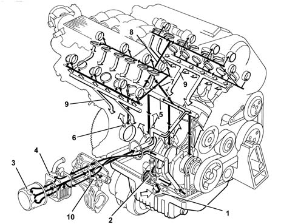
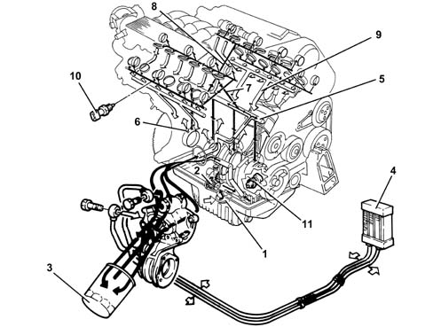
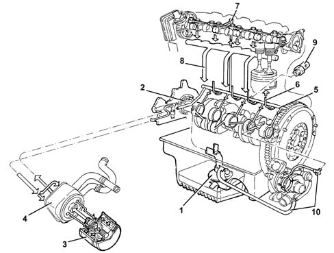
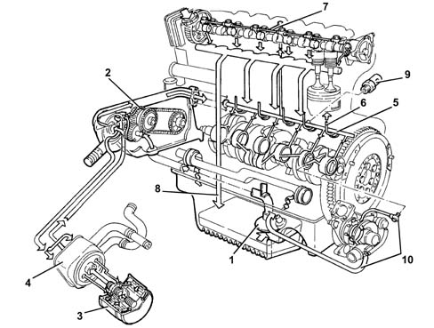
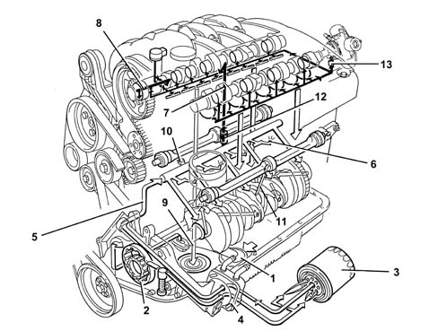
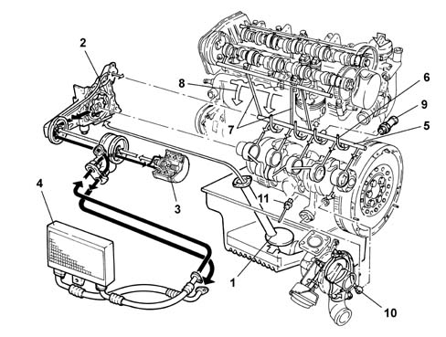
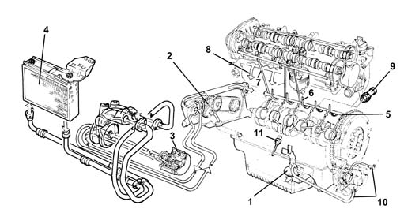

Introduction - ENGINE LUBRICATION SYSTEM
- Path
- Descriptions > 10 ENGINE > 1084 ENGINE LUBRICATION SYSTEM > Introduction - ENGINE LUBRICATION SYSTEM
- Kind
- system description
- Applies to
- engines: 1.6 TS , 1.8 TS, 2.0 JTS, 2.5 V6, 3.2 V6, 1.9 JTD 8v , 1.9 JTD 16v, 2.0 JTS, 2.4 JTD 10v, 2.4 JTD 20v; all production periods
- Interactive page
- https://sloeber94.github.io/elrnDB-a156/en/#/3239198
Applies to: engines: 1.6 TS , 1.8 TS; all production periods
ENGINE LUBRICATION SYSTEM
1, Suction pipe with filter mesh 2, Oil pump 3, Oil filter cartridge 4, Water/oil heat exchanger 5, Main longitudinal duct 6, Piston skirt cooling jets 7, Camshaft bearings vertical duct 8, Timing variator ducts 9, Oil return to sump 10, Switch for engine oil pressure warning light 11, Counter-??tat??? s?afts d??t - 2.0 ?.S????
Applies to: engines: 2.5 V6; all production periods
ENGINE LUBRICATION SYSTEM

1, Suction pipe with filter mesh 2, Oil pump 3, Oil filter cartridge 4, Water/oil heat exchanger 5, Main longitudinal duct 6, Jets (piston skirt cooling) 7, Vertical duct (right cylinder head camshaft support lubrication) 8, Vertical duct (left cylinder head camshaft support lubrication) 9, Oil return to sump 10, Switch for engine oil pressure warning light
Applies to: engines: 3.2 V6; all production periods
OPERATION
ENGINE LUBRICATION SYSTEM

1 - Suction pipe with filter mesh 2 - Oil pump 3 - Oil filter cartridge 4 - Engine oil cooling radiator 5 - Main longitudinal duct 6 - Jets (piston skirt cooling) 7 - Vertical duct (right cylinder head camshaft support lubrication) 8 - Vertical duct (left cylinder head camshaft support lubrication) 9 - Oil return to sump 10 - Switch for engine oil pressure warning light 11 - Engine oil temperature sensor
Applies to: engines: 1.9 JTD 8v ; all production periods
CONSTRUCTION FEATURES
ENGINE LUBRICATION SYSTEM

1, Suction pipe with filter mesh 2, Oil pump 3, Oil filter cartridge 4, Water/oil heat exchanger 5, Main longitudinal duct 6, Jets (piston skirt cooling) 7, Vertical duct (camshaft support lubrication) 8, Oil return to sump 9, Engine oil pressure warning light switch 10, Turbocharger lubrication pipes
Applies to: engines: 2.4 JTD 10v; all production periods
ENGINE LUBRICATION SYSTEM

1, Suction pipe with filter mesh 2, Oil pump 3, Oil filter cartridge 4, Water/oil heat exchanger 5, Main longitudinal duct 6, Jets (piston skirt cooling) 7, Vertical duct (camshaft support lubrication) 8, Oil return to sump 9, Engine oil pressure warning light switch 10, Turbocharger lubrication pipes
Applies to: engines: 2.0 JTS, 2.0 JTS; all production periods
CONSTRUCTION FEATURES
ENGINE LUBRICATION SYSTEM

1 - Suction pipe with filter mesh 2 - Oil pump 3 - Oil filter cartridge 4 - Water/oil heat exchanger 5 - Main longitudinal duct 6 - Piston skirt cooling jets 7 - Camshaft bearings vertical duct 8 - Variable valve timing ducts 9 - Oil return to sump 10 - Switch for engine oil pressure warning light 11 - Counter-balance shafts duct 12 - Anti-reflux valve 13 - High pressure pump connector lubrication jet
Applies to: engines: 1.9 JTD 16v; all production periods
COMPOSITION
STRUCTURE
The engine lubrication system is represented below.

1 - Suction pipe with filter mesh 2 - Oil pump 3 - Oil filter cartridge 4 - Engine oil cooling radiator 5 - Main longitudinal duct 6 - Jets (piston skirt cooling) 7 - Vertical duct (camshaft support lubrication) 8 - Oil return to sump 9 - Engine oil pressure warning light switch 10 - Turbocharger lubrication pipes 11 - Engine oil level sensor
Applies to: engines: 2.4 JTD 20v; all production periods
ENGINE LUBRICATION SYSTEM
View of assembly

1. Suction pipe with filter mesh 2. Oil pump 3. Cartridge engine oil filter 4. Engine oil cooling radiator 5. Main longitudinal duct 6. Jets (piston skirt cooling) 7. Vertical duct (camshaft support lubrication) 8. Oil return to the sump 9. Engine oil pressure warning light switch 10. Turbocharger lubrication pipes 11. Engine oil level sensor.